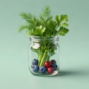
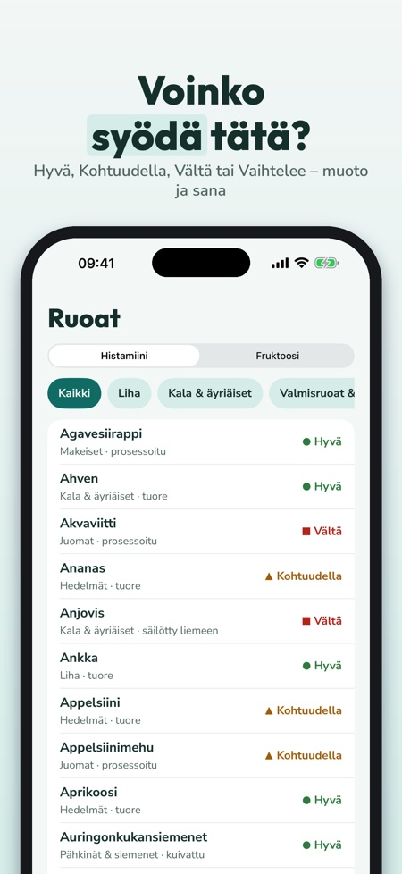
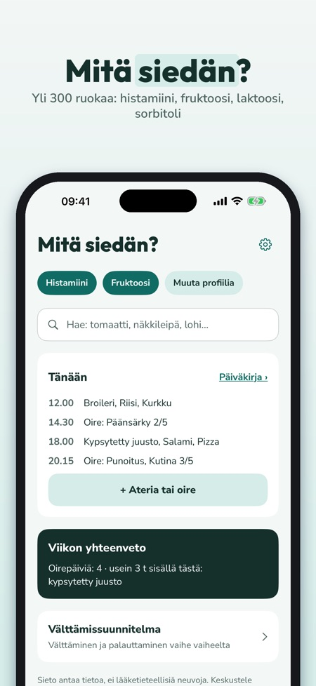
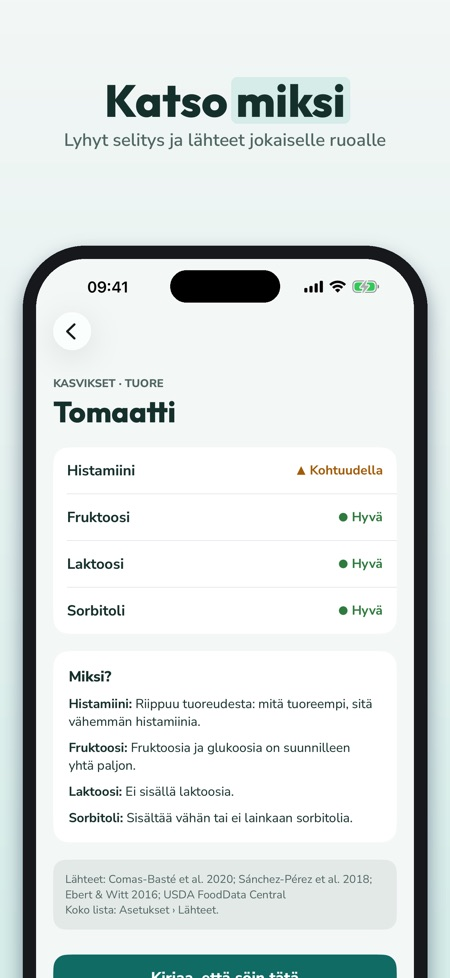

Ruokalista ja ruokapäiväkirja. Voinko syödä tätä? Yli 300 ruokaa arvioituna histamiinin, fruktoosin, laktoosin ja sorbitolin kannalta – suomeksi, pohjoismaisin ruoin, lähteineen ja päiväkirjalla.



Voinko syödä tätä? Sieto vastaa suomeksi – histamiinin, fruktoosin, laktoosin ja sorbitolin kannalta.
Ei tiliä – kaikki tallentuu puhelimeen. Fruktoosi, laktoosi ja sorbitoli kuuluvat FODMAP-ryhmiin; Sieto ei näytä annosmääriä.
RUOKALISTA, YLI 300 RUOKAA
• Pohjoismaista ruokaa: ruisleipä, näkkileipä, silli, graavilohi, viili, piimä, puolukka, lanttu, lakritsi ja paljon muuta
• Arvio intoleranssittain: Hyvä, Kohtuudella, Vältä tai Vaihtelee – värin, muodon ja sanan kanssa
• Miksi? Lyhyt selitys, esim. kypsytetty, fermentoitu tai enemmän fruktoosia kuin glukoosia
• Lähteet jokaiselle ruoalle; kun lähteet ovat eri mieltä, arvio on ”Vaihtelee”
OMA PROFIILI JA HAKU
• Valitse intoleranssisi – lista ja haku näyttävät sinua koskevat tiedot
• Hae arkisilla sanoilla ja synonyymeillä
TURVALLISET
• Tallenna, mitä siedät ja mitä vältät
• ”Näytä kaupassa”: iso lista tarjoilijalle tai kauppaan
PÄIVÄKIRJA
• Kirjaa ateriat listasta tai vapaasti ja oireet voimakkuudella 1–5
• Viikon yhteenveto: oireet päivittäin ja mitä useimmin söit 3 tunnin sisällä ennen oiretta – kuvaus merkinnöistäsi, ei diagnoosi
VÄLTTÄMISSUUNNITELMA
• Vältä, palauta, oma lista – vaiheet, jotka suunnittelet lääkärin tai ravitsemusterapeutin kanssa
• Palautusloki
30 OMAA RESEPTIÄ
• Pohjoismaisia arkiruokia profiilisi mukaan
PDF LÄÄKÄRILLE TAI RAVITSEMUSTERAPEUTILLE
• Päiväkirja, listat ja loki PDF:nä jakovalikon kautta
SIETO PLUS
Ilman ostoa: yksi intoleranssi, haku, 50 ruokaa kaikkine tietoineen ja 7 päivän päiväkirja. Sieto Plus avaa kaikki intoleranssit, koko listan, rajoittamattoman päiväkirjan, viikkoyhteenvedon, välttämissuunnitelman, reseptit ja PDF:n. Valitse vuositilaus (7 ensimmäistä päivää maksutta uusille tilaajille, sitten uusiutuu automaattisesti, peru milloin tahansa App Storen asetuksista) tai elinikäinen kertaosto.
TÄRKEÄÄ
Sieto on tietosovellus eikä lääkinnällinen laite. Se ei tee diagnooseja eikä korvaa lääkäriä tai ravitsemusterapeuttia. Arviot ovat yleistä ohjausta, ja sietokyky on yksilöllinen.
Päiväkirja ja listat tallentuvat vain puhelimeesi. Ei tiliä.